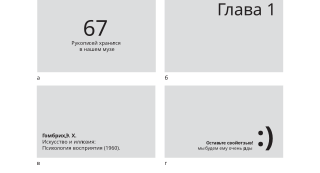
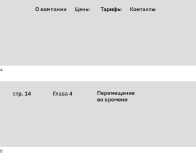
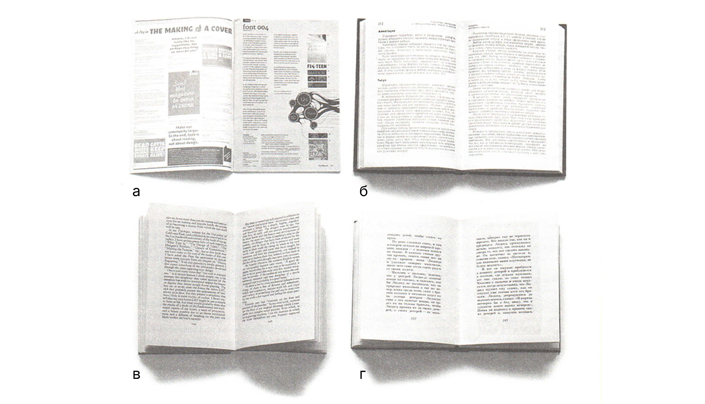
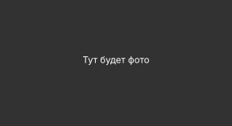

Композиция
В прошлой главе мы узнали, как оформляются типичные объекты книжной композиции, а теперь поговорим о том, как они собираются вместе
Книжная композиция отличается от обычной, так как создана не на одной странице, а на ряде разворотов. Она динамична и меняется в зависимости от содержания полосы. Разворот воспринимается как единое пространство, поэтому эскизы делают сразу на двух соседних страницах. В этой главе мы узнаем, как, во‑первых, построить выразительную композицию, и, во‑вторых, сохранить её логику на протяжении всего издания. Ознакомимся с приемами, при помощи которых выстраивается иерархия и объекты отделяются друг от друга.
Советы
1. Правило «внутреннее меньше внешнего». Для определения расстояния между любыми объектами помогает негласное правило «внутреннего-внешнего», согласно которому внутреннее белое пространство всегда должно быть меньше внешнего. Так, расстояние между словами всегда будет меньше, чем интерлиньяж, иначе структура строки рассыпется. Взгляд будет беспорядочно убегать то вверх, то вниз, теряя свою строку.1

←
1
Влияние интерлиньяжа на удобочитаемость
Еще одно правило, которое не все осознают, особенно начинающие верстальщики. Между буквами расстояние всегда будет меньше межсловных пробелов, чтобы текст не превратился в кашу из символов. Это особенно актуально в строчках, состоящих из заглавных букв, если им повезёт быть набранными с разрядкой между буквами. Из-за того, что дизайнер увеличивает межбуквенное расстояние, пробелов становится недостаточно для разграничения слов.2 Если же подобное словосочетание ещё и набрано в две строки с маленьким интерлиньяжем, мы получим пласт из букв, плавающих как амёбы в эссенции листа. Белое останавливает глаз, собирает информацию в кучки. Понимание этого правила помогает избежать перечисленных ошибок.
←
2
Белое в надписях, набранных заглавными буквами
2. Якорные точки и линии для расположения объектов. В книжной композиции элементы объединяются в группки. Визуально можно каждую поместить в прямоугольник. Внутри этого прямоугольника имеются опорные точки: по углам и в центре.3 Если располагать объекты в этих местах, композиция с большой вероятностью будет хорошей. Вторая версия якорных точек — это линии,4 то есть элементы композиции также можно располагать по линиям. В целом, этой же логикой расстановки можно пользоваться на уровне всего разворота, когда мы располагаем на нем образовавшиеся группы элементов.5 Но это не обязательно, потому что на уровне разворота работают опорные линии — группы могут опираться на единую направляющую линию и таким образом располагаться по границе своего общего, невидимого контейнера-прямоугольника.
←
3
Якорные точки, удачные примеры

←
4
Силовые линии



←
5
Пример использовани якорных точек и силовых линий
3. Между объектами должна быть внятная иерархия. Таким образом мы дружелюбно подсказываем читателю, на что стоит обратить внимание в первую очередь, а какая информация второстепенная. Если окружить картинку большим количеством воздуха, она будет казаться более значимой и заметной. Текст с длинной строкой кажется нам более важным. Другие способы расставить акценты собраны в этой статье в теме «Иерархия».
4. Хорошие поля. Классная композиция невозможна без оптимальных полей. Из-за особенности нашего зрения чтобы нам казалось, что объект располагается по центру, нужно поднять его немного выше средней линии в любой композиции. Книжная — не исключение. Поэтому, чтобы блок текста «парил», нижнее поле всегда по классике делают больше верхнего.6 Сейчас модно делать поля маленькими, и это решение делает макет более дерзким.

←
6
Примеры полей из книги «Живая типографика»
a. малые поля
б. поля по Госту
в. поля по канону,
разработанному Яном Чихольдом
г. ампирные поля
Вне зависимости от размера полей, главный совет, который стоит запомнить – нужно стараться НЕ делать поля одинаковыми7б. Не стоит располагать текст ровно посередине, делая верхнее и нижнее поле одинаково большими, а боковые маленькими.7a Выбору полей посвящена отдельная глава в учебнике. В ней мы рассмотрим все факторы, которые могут повлиять на выбор, узнаем, от чего он может зависеть.

←
7
Соотношение полей
а-б. Плохой пример отношения размеров полей друг к другу
в-г. Как можно подправить варианты а-б, сильно не отходя от них
Ниже находятся две вещи, обеспечивающие комфорт читателя и образующие ту самую систему в оформлении макета, без которой невозможно ни одно многостраничное издание.
5. Расположение. Каждому объекту выделяется своя область в развороте, которая не меняется на протяжении книги. Благодаря этому при перелистывании страницы читатель не бегает глазами в поисках продолжения текста. Для этого, в зависимости от стиля и сложности макета, используют либо колонки, либо модульные сетки. Можно обойтись опорными линиями. Про них поговорим через пару абзацев в теме «Сетки».
6. Оформление. Не принято менять шрифты, интерлиньяж, кегль, так как это путает читателя. Ему будет требоваться время, чтобы узнать объект при перелистывании на другую страницу. На узнавание также влияют пропорции. Если основной блок текста внезапно станет шире или уже, это вызовет неприятное смятение8 у читателя, так как он заподозрит, что это другой тип текста.
←
8
При перелистывани на страницу 3-4 может возникнуть смятение – мы не уверены в том, что это продолжение того самого блока текста
Сетки
Благодаря сетке разные развороты кажутся цельной серией, живущей по единым законам. Зритель визуально считывает её наличие. С ней ему удобнее читать, он чувствует упорядоченность.
Под термином «квазисетка» автор этой главы объединяет 3 разных способа, которые выполняют ее роль — это направляющие линии, колонки и модульная сетка. Для некоторых книг достаточно поставить пару направляющих и прислонить к ним блок текста, и этого уже будет достаточно, чтобы достичь системности в разных разворотах.
←
9
Модульная сетка и типовые развороты
Сетка определяет расположение и пропорции объектов на разворотах в книге. В первую очередь она нужна именно нам, дизайнерам, чтобы не думать над композицией каждого разворота и с математической точностью ставить объекты на выбранные места. Дизайнер создаёт себе набор «правил», чтобы всегда знать, куда точно поставить элемент. Это ускоряет работу над композицией в десятки раз. Не бойся, это вообще не про ограничения в творчестве! Система лишь даёт общий каркас, на основе которого рождаются вариации. Она должна делать работу удобнее и комфортнее, в противном случае сетку нужно поменять. Хорошая сетка должна оставлять простор для творчества и свободы решений дизайнера.9-10 Обычно над сеткой много думают на этапе набросков, до дизайна, а потом уточняют в процессе верстки. Это нормальная практика, потому что мы не всегда можем предсказать все ситуации, которые могут произойти с материалом при его распределении на макет. Например, наша модульная сетка может не учитывать, что подписи под картинками могут занимать по 4–5 строк, а не 2 строчки, что мы задумали на этапе набросков. Нормально, если первая сетка, что ты придумал для книги, окажется неудобной или сделает развороты однотипными. Держи в голове мысль, что ты в любой момент можешь её уточнить или поменять.
←
10
Модульная сетка и типовые развороты
А какой смысл имеет сетка для читателя? Все в книге подчинено особенностям зрения и восприятия человека. Мы такие существа, которым приятно находить закономерности в самых, на первый взгляд, разных вещах. Перелистывая страницу за страницей, нам важно опираться на схожести в местоположении и оформлении объектов. Хочется быстро сориентироваться. Читатель ожидает увидеть блок текста в привычном ему месте. Ему так намного проще находить начало первой строки, это происходит непроизвольно. Благодаря предсказуемости он не отрывается от мысли, перетекающей из разворота в разворот. Смещение текста в сторону, изменение его внешнего вида — это визуальный сигнал о том, что старая мысль исчезла и на её месте появился совсем другой тип информации. Дав человеку предсказуемость в расположении объектов на листе, мы смещаем фокус с оценки дизайна на восприятие информации. Поэтому, если тебе важно, чтобы читатель фокусировался на смысле длинного текста, не стоит менять местоположение блока. Давайте на этом перейдем к видам сеток.
Виды сеток
1. Опорные линии – одномерная сетка. Поставить опорные линии — это самый простой способ из трех. Это будут незримые оси, по которым выравниваются11 типографические элементы. На них основаны оба следующих способа систематизировать пространство разворота. К опорным линиям «приклеиваются» элементы одной из своих сторон. Причем для любой квазисетки важно, чтобы именно чёткие границы элемента опирались на линию, тем самым визуально воспроизводя её часть. Для примера возьмем текстовый блок с выключкой вправо. Блок образует прямоугольник и имеет четыре стороны, из которых только три имеют четкий край (верхняя, нижняя и левая стороны). Справа образуется рваный край за счет того, что строки имеют разную длину Иллюстрация. Прислоним блок к опорной линии левым краем. Только в этом случае появляется ось, которая визуально считывается читателем и создаёт у него ориентир во время чтения. Если этот текстовый блок прислонить к опорной линии правым краем, магия опорной линии не будет работать — блок не будет выстраиваться в единую линию с другими объектами.
←
11
Одномерная сетка
←
12
3 опорные линии у текстового блока
Кроме этих трех, в качестве опорной линии можно использовать базовую линию строк текстового блока
2. Колонки — двухмерная сетка. Это вариант, который фиксирует расстояние между объектами по горизонтали.13 Под колонки подстраивается ширина текстового блока, картинок, а маленькие элементы могут просто прислоняться одной стороной к краю колонки. Ни один из элементов не должен начинаться или заканчиваться на территории пробела между колонками — межколонника. Функций у колончатой сетки две: систематизировать расположение объектов по горизонтали и создать ощущение одинаковых пробелов между элементами. Когда большой объект или несколько маленьких опираются на колонку, на развороте появляется горизонталь, которую глаз считывает в качестве опоры, как в примере с одномерной сеткой. Важно запомнить, что ширина колонки влияет на кегль текста – чем колонка уже, тем меньше должен быть текст, чтобы читателю было комфортно его читать (минимум 45 символов в строке).
←
13
Двухмерная сетка
3. Модульная сетка — трехмерная. Пользуясь этим вариантом, мы расчерчиваем поверхность разворота на полноценную сетку из прямоугольников — модулей. Логика почти такая же, как в колончатой системе, просто теперь мы контролируем ещё и расстояния по вертикали.14
←
14
Схематичный вид реальной модульной сетки для годового отчета IBM
Чтобы выбрать высоту и ширину одного модуля, стоит внимательно посмотреть на свой контент. Иногда за его высоту или ширину берётся размер иллюстраций в книге, потому что вся книга, например, состоит из одинаковых по пропорциям изображений. Но так везёт не всегда. Чаще всего за модуль приходится брать маленький объект, который часто повторяется в книге. Например, подпись к картинкам.
←
15
Разнообразие композиций, которые можно создать в рамках одной модульной сетки.
Между модулями располагается пробельная строка. По факту, это межколонник, только горизонтальный. Элемент никогда не начинается на территории пробельной строки, но может там заканчиваться. Модульная сетка делает дизайн системным и четким за счет того, что элементы выравниваются по общим направляющим как по вертикали, так и по горизонтали. Такая сетка помогает тратить еще меньше времени на расстановку элементов по развороту, в отличие от колонок, где мы не учитываем расположение элементов по вертикали. В этом руководстве мы не будем строить модульную сетку, так как это нужно не всем и несколько выходит за рамки общеобразовательного курса, но, если вас заинтересовала тема, в своей небольшой по объему книге «Модульные системы в графическом дизайне» Йозеф-Мюллер Брокманн очень понятным и простым языком описал ее создание. Там же вы найдете еще больше примеров известных модульных сеток, которые применялись в реальных журналах, книгах и других проектах.
Модульные сетки могут строиться иначе: состоять из разновеликих прямоугольников,16 из других сеток.17 Но и в таком варианте, что мы рассмотрели, хватает нюансов: в книге, построенной на модульной сетке, стоит уделять особое внимание приводности строк.
←
16
Знаменитая сетка Карла Герстнера для журнала Capital
Варианты использования сетки. В журнале получилось 2, 3, 4, 5 и 6 колонок в одной сетке
←
17
Двухколонник
Примеры из разных макетов
←
18
Трехколонник
Примеры из разных макетов
←
19
Четырехколонник
Примеры из разных макетов
Мы рассмотрели 3 примера, как может использоваться каждый вариант сетки. Если суммировать, сетка нужна для того, чтобы задавать расстояния и расположение объектов на развороте, что формирует единый стиль оформления с точки зрения композиции. Делает развороты цельной серией. Она ускоряет работу с макетом, снижает вероятность ошибок — смещение элементов от изначально задуманного местоположения. Ну и, в конце концов, читатель быстрее воспринимает систематизированную информацию.
Иерархия
В главе с «Элементами разворота» мы прикинули, как могут выглядеть типографические объекты «в вакууме», то есть пока в отрыве друг от друга. В этой главе мы берем в расчет их взаимосвязь между собой, что может помочь уточнить оформление наших объектов. Познакомимся с приемами, которые выстраивают иерархию между элементами, выделяют более важные и перемещают на второй план прочую графическую информацию.
1. Воздух. Вместо того, чтобы выделять заголовок шрифтом крупного кегля, можно поступить изящнее: окружить его чуть большим количеством воздуха и он станет заметнее.20а Тут тоже работает правило «внутреннего-внешнего», но мы как бы перешагиваем через множество уровней и показываем, что объект в душе своей находится настолько выше остальных, что ему приходится давать очень много свободного пространства. Даже миниатюрные картинки, стоящие в одиночестве на полосе книги, приобретают значимость, и глаз точно одарит их особым вниманием.
←
20
Два способа показать лидирующее место заголовка в иерархии
2. Большой размер (кегль). Наверное, ни для кого не будет секретом, что большие объекты кажутся нам более важными. Надпись, набранная самым большим кеглем, важнее остальных.20б
3. Темные объекты. Жирное начертание дает более темный тон блоку текста, а темные объекты привлекают больше внимания. По этой причине второстепенные блоки обычно оформляют так, чтобы они выглядели более светлым «пятном» на развороте.21 Если второстепенному тексту, например, узкой колонке, задается жирное начертание, скорее всего автор хочет, чтобы несмотря на второплановость ее повествования, читатель не забыл и про этот текстовый блок (→рис. 70), хотя в случае личных и учебных проектов дизайнеров это может быть решение ради эксперимента и необычной эстетики.
←
21
Два основных текста: на русском и английском
4. Круглая форма. Так устроено, что из всех фигур круг привлекает к себе больше всего внимания. И работает это не только с фигурой, но и с округлыми объектами на фотографии. К ним можно отнести лицо, яблоки, мячи и так далее. Для фотографии это будет своеобразный «якорь», который можно встроить в книжную композицию. Кроме круга наше внимание остро привлекают фотографии без фона. Эти объекты могут стать якорем, удерживающим внимание на развороте в книге.
5. Длина строки. Чем длиннее строка, тем более главным нам кажется этот блок текста. Это проявляется не только в реальной длине строчки, но и в том, насколько много места ей чисто теоретически выделено в макете. Например, в книге «Облигации в России», которую мы рассматривали в главе «План работы», заголовки располагаются «раньше» текстового блока22 (мы читаем слева-направо, поэтому тут уместно это слово). Если бы заголовок был в 2 строчки, ширина его блока была бы больше основного текста. Так что иерархию можно выстраивать не только длиной строки, но и смещением блоков текста относительно друг друга.
←
22
Входная полоса из книги «Облигации в России»
←
22
Та же самая книга, что и в рис. 21
Здесь текст на английском также набран жирным начертанием, но занимает миниатюрную колонку. Текст на русском языке однозначно выходит на первый план.
6. Смена ритма. Это выделения в тексте, смещение объекта относительно привычной направляющей оси. Любой элемент, который нарушает монотонность и однородность становится заметным.
Теперь ознакомимся с вариантами, как можно отделить элементы друг от друга. Мы уже знаем, что согласно правилу «внутреннего-внешнего» вокруг блока текста должно быть больше воздуха, чем внутри него. Поэтому рассмотрим два других менее очевидных способа, не связанных с работой с незапечатанным листом.
Цветовой тон
В примере на рисунке23 между узкой колонкой и широким блоком текста нет пространства, но мы без труда заметим, что это разные объекты. Колонка создает темное пятно из-за жирного подчеркивания, и разница в светлоте разграничивает эти элементы. На тон текстового блока также может влиять интерлиньяж, высота строчных шрифта, начертание и, в конце концов, цвет текста. Всегда можно просто покрасить его в серый. Все эти способы, кроме последнего, связаны с увеличением белого пространства в текстовом блоке (да, оно нас не отпустит и в альтернативных приемах по композиции).
←
23
Цветовой тон разграничивает два блока текста
В первом случае, когда мы задаем крупный интерлиньяж, его становится больше относительно запечатанного пространства. Во втором случае, в более светлом начертании, уменьшается жирность букв и увеличивается внутребуквенное пространство, что в итоге дает светлый блок текста. Третий случай был связан с высотой строчных. В разных шрифтах она отличается, и в тех, где строчные маленькие, обычный интерлиньяж, равный 120% от размера шрифта, получается больше, из-за чего блок выходит светлым. Хотя никто не мешает нам понизить размер межстрочного до 100–110% и превратить тон текста в обычный.
Линия
Излюбленный прием газет и других многостраничных изданий, где мало места. Это самый простой вариант, но почему бы им и не воспользоваться, тем более в некоторых книгах он может поддерживать какую-нибудь концептуальную идею.
←
24
Линия
Журнал Forbes (USA) Дек. 2023 / Янв. 2024
←
25
Длина строки
Мы уже коснулись этого способа в рамках обсуждения иерархии. Давайте посмотрим, как выделяемое место под объект по горизонтали может разграничить два объема текста. На рисунке26 текст на английском дополнительно выделен синим цветом, благодаря чему еще быстрее считывается мысль, что это два разных текста, а также создается связь с более крупным текстом на левой полосе разворота.
←
26
Белое в надписях, набранных заглавными буквами
Таким образом, в этой главе мы ознакомились с основами книжной композиции, узнали, какие есть виды сеток и зачем нужна каждая из них. Рассмотрели приемы, которые позволяют грамотно, в соответствии со смыслом материала, расставить акценты между объектами на развороте, и какими способами можно разграничить похожие по оформлению элементы.